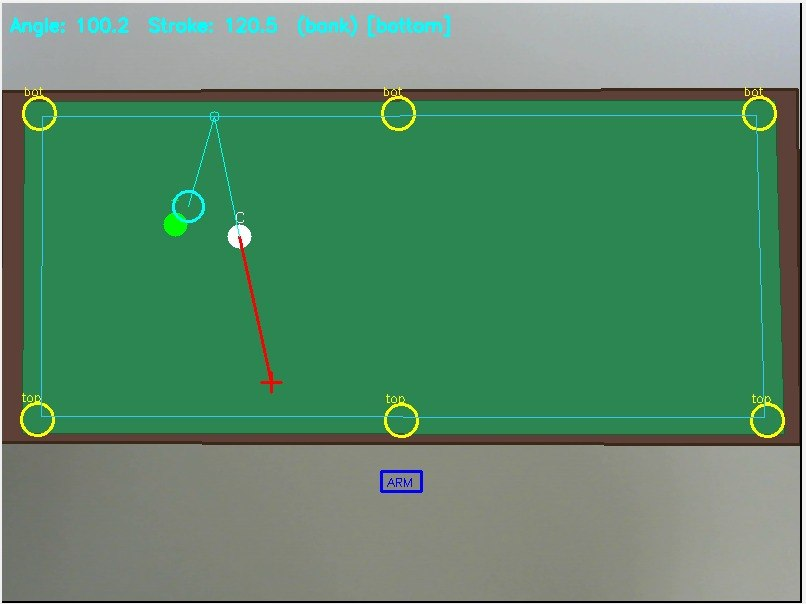
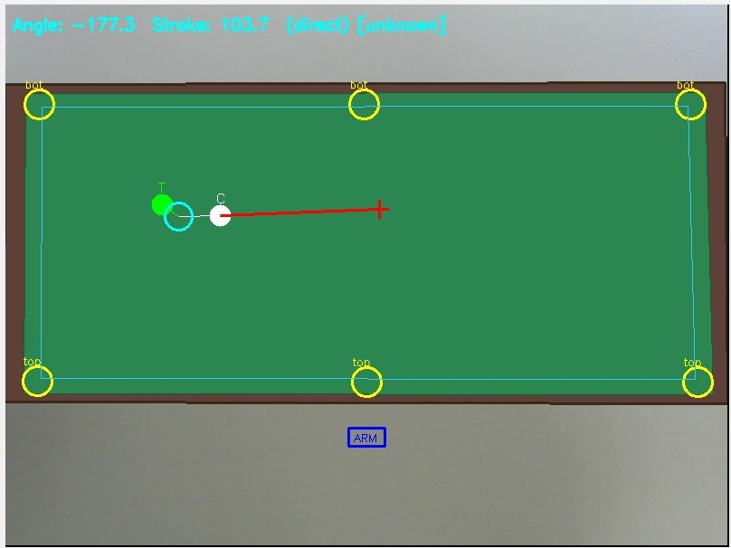
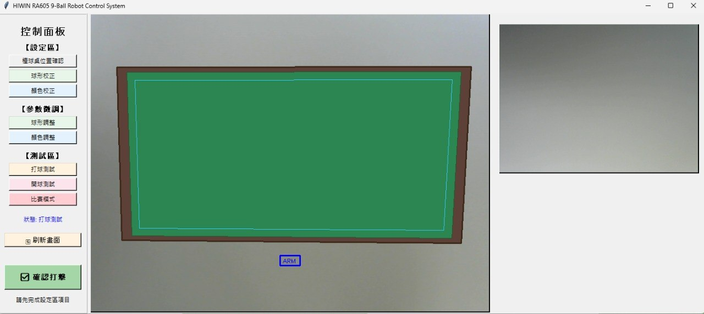

內部進度記錄 · 學校活動介紹
七個章節，完整記錄上銀撞球專案從零到現在的建置歷程
軟硬體整合的起點 — 從無到有的開發環境搭建
模組化設計 — Python 骨架、I/O 介面標準化、軌跡模型

擊球角度、力道計算與軌跡模擬

方案選擇：直打 / 反彈策略

控制面板：左側為陌生環境校正區，右側為正式比賽多策略處理區
從軟體模擬到實體碰撞 — 驗證每一個環節的實際可行性
Webcam 影像擷取測試，球偵測框架驗證，透視座標轉換校正
TCP/IP 連線測試，軌跡規劃驗證，安全高度設定與移動測試
自製縮小版撞球檯，替代正式比賽球檯進行前期驗證
Windows 與 Linux 跨平台訊息溝通，確保不同模組同步運作
桿弟機構半齒齒輪設計驗證，馬達驅動電路測試
Homography 校正框架，陌生環境快速適應流程建立
從模擬到實作的系統化開發流程
期初先透過軟體模擬確認打擊點，進行模組的區分規劃與調整，方便中後期於實際操作時能快速進行調整。透過初期的變數建立，快速對應實際問題。
與他組共同討論處理手臂問題：連線、環境建置、軟體規劃、策略設計、測試、OpenCV 應用等。採用 Windows 與 Linux 分區開發，各自負責不同運算任務，再透過訊息機制整合。
Windows 接收視覺畫面並呈現模擬，Linux 負責運算規劃，透過訊息機制同步整合，達成「分開開發、分開測試、統一應對」的協作模式。
首屆參賽 × 離島資源限制 — 克服未知，一路走來
感謝老師與學校協助，如期取得 HIWIN 手臂進行複審準備，解決了初期最大硬體難題。
地處金門，實際硬體取得與測試較本島困難，須更依賴軟體模擬與前期規劃來銜接。
沒有正式撞球桌可供測試，著手製作簡化版撞球檯面，先面對複審任務需求。
首屆參加上銀撞球組，建置過程充滿未知數，感謝一路上各方協助與支持。
看見不足，才能持續成長
預留同學實作區域，策略決策演算法仍待整合。未來需建立更完整的擊球策略資料庫。
球偵測、桿頭對位等視覺演算法尚未完全實作，需要更多實際樣本優化準確率。
跨平台訊息傳遞在網路延遲與斷線處理上需要強化，確保比賽時連線穩定。
桿弟機構與擊球力道控制需更精準，力道段位從 12 段（0.25~3.0 m/s）優化至更細緻的控制。
複審在即，決賽可期 — 一步一腳印，朝冠軍前進
2026-05-22 前完成並繳交複審任務影片
2026-08-19~20 決賽，目標前四強
完成桿弟機構與擊球力道控制系統
建立完整擊球策略資料庫與決策系統
上銀撞球 2026 · 金門大學資工系